Globe and Mail : Investment Strategies 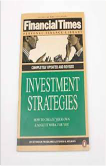 Never Give Up: Jack Ma In His Own Words  Despite Ma's massive influence in China and in the global tech world, his inspirational rags-to-riches story is relatively unknown to the general American public. Never Give Up: Jack Ma In His Own Words is a comprehensive guide to the inner workings of arguably the most prominent figure in the global tech world in the past 20 years—comprised entirely of Ma's own thought-provoking and candid quotes. When Ma decided to start his first Internet company in 1999, few Chinese people knew what the Internet was. Ma, a former English teacher, knew nothing about coding, and his $20,000 in startup funds were not made up of investments from venture capitalists but loans from his family. He channeled his startup experience into Alibaba, a group of websites that allows businesses and people to connect in order to buy and sell products (similar to eBay and Amazon) while also collecting advertising revenue (similar to Google). By some measures, Alibaba is now the largest e-commerce site in the world. In this book, more than 200 quotes on business values, innovation, entrepreneurship, competition, management, teamwork, life, and more provide an intimate and direct look into the mind of this modern business icon and philanthropist. Many of these quotes are translated directly from the Chinese press and interviews. For readers who do not read Chinese and have no other access to these materials, this book provides invaluable insight into the mind of one of the world's most successful business magnates. The New Lion Handbook : The World's Religions  The New Windmill Book of Classic Short Stories The New Windmill Book of Nineteenth Century Short Stories The Oracle Speaks: Warren Buffett In His Own Words  Despite this tremendous success, “the Oracle of Omaha” remains modest. He acknowledges that he has a unique ability to evaluate businesses, but he doesn’t feel entitled to the vast wealth that ability has earned him. Instead, he likes to say that he was born at the right place and time. This humility in the face of proven talent and innumerable wealth is part of what makes Buffett universally popular—he is one of the world's wealthiest men and yet he is still personable and relatable. For the first time, the most thought-provoking and inspiring quotes from Buffett are now compiled in a single book. The Oracle Speaks: Warren Buffett in His Own Words is a comprehensive guidebook to the inner workings of the Berkshire Hathaway chairman. Hundreds of Buffett's best quotes, comprising thoughts on investing, Wall Street, business, politics, taxes, and life lessons, will provide the most intimate and direct look into the mind of a modern business icon and give readers enough counsel to last a lifetime. Media outlets, financial advisers, politicians, and Americans from Main Street to Wall Street hang on every word Buffett speaks, hoping to gain valuable insight into Buffett's investments and successes. There is possibly no greater stamp of approval in the business world than to have Buffett invest in a company, and few leaders in the course of history have commanded such universally agreed-upon respect. Even beyond his business savvy, Buffett is influential as a progressive thinker and active philanthropist, having pledged to give most of his money to charity through the Bill and Melinda Gates Foundation as well as foundations run by his three children. It is this humility that consistently draws people to Buffett, and will draw people to The Oracle Speaks. Most recently, inspired by Buffett's New York Times editorial in which he claimed he paid too little in taxes, President Barack Obama and Congress have named a series of tax reforms after Buffett. While the political implications have been controversial, Buffett has retained his reputation as an outspoken and successful business leader. The Oracle Speaks draws from decades of interviews, editorials, and annual shareholder reports, amassing the most complete outline of how Buffett believes a good business is run and a good life is led. It's advice that Buffett has successfully adhered to throughout his 80-plus years, and it is advice now available in the succinct, poignant, gift-friendly package of The Oracle Speaks. A Tribute to Ghalib  The White Tiger Aravind AdigaBorn in a village in the dark heart of India, the son of a rickshaw puller, Balram is taken out of school and put to work in a teashop. As he crushes coal and wipes tables, he nurses a dream of escape. His big chance comes when a rich landlord hires him as a chauffeur for his son, daughter-in-law, and their two Pomeranian dogs. From behind the wheels of a Honda, Balram sees Delhi and begins to see how the Tiger might escape his cage. For surely any successful man must spill a little blood on his way to the top? The White Tiger is a tale of two Indias. Balram's journey from the darkness of village life to the light of entrepreneurial success is utterly amoral, brilliantly irreverent, deeply endearing and altogether unforgettable.The Reluctant Mullah Afzal, SagheerAlone in his room in a London madrasah, Musah tries on an abaya, a hijab and a shawl: he has crossed over - to outsiders he has become a Muslim woman. In a Pakistani haveli, his cousin, the nubile Iram, waits to fulfil the will of Dadaji, their grandfather. She and Musa must marry. When Musa's siblings and friends step in to help him fight tradition and achieve what he wants - a love match - their efforts lead to outrage, hilarity and, ultimately, tragedy.Tuesdays With Morrie : An Old Man, a Young Man and Life's Greatest Lesson 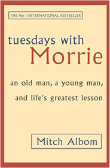 Albom, MitchMaybe it was a grandparent, or a teacher or a colleague. Someone older, patient and wise, who understood you when you were young and searching, and gave you sound advice to help you make your way through it. For Mitch Albom, that person was Morrie Schwartz, his college professor from nearly twenty years ago. Maybe, like Mitch, you lost track of this mentor as you made your way, and the insights faded. Wouldn't you like to see that person again, ask the bigger questions that still haunt you? Mitch Albom had that second chance. He rediscovered Morrie in the last months of the older man's life. Knowing he was dying of ALS - or motor neurone disease - MItch visited Morrie in his study every Tuesday, just as they used to back in college. Their rekindled relationship turned into one final 'class': lessons in how to live. TUESDAYS WITH MORRIE is a magical chronicle of their time together, through which Mitch shares Morrie's lasting gift with the world.THE MINISTRY OF UTMOST HAPPINESS ROY ARUNDHATILetters to My Torturer: Love, Revolution, and Imprisonment in Iran Asadi, HoushangThe Complete Guide to Starting and Running a Bookshop  Mirrored Life: The Rumi Novel  Speeches That Changed the World Beare, EmmaThe speeches in this book are divided into the following chapters: Ancient History, Love, Religion, Science, Patriotism, Philosophy, Humanity & Liberty, Sport, Plitics, & War. Many of them have inspired people to act, some have changed the way people think or look at the world. Others have changed the course of events across the globe - sometimes for the better, at other times with devastating results. All have chronicled our history.The Wolf of Wall Street: How Money Destroyed a Wall Street Superman  THE WOLF OF WALL STREET In the 1990s Jordan Belfort, former kingpin of the notorious investment firm Stratton Oakmont, became one of the most infamous names in American finance: a brilliant, conniving stock-chopper who led his merry mob on a wild ride out of the canyons of Wall Street and into a massive office on Long Island. In this astounding and hilarious tell-all autobiography, Belfort narrates a story of greed, power, and excess no one could invent - the story of an ordinary guy who went from hustling Italian ices at sixteen to making hundreds of millions. Until it all came crashing down. From Worst to First: Behind the Scenes of Continental's Remarkable Comeback  . . . in an age where managing seems increasingly complicated, some of Bethune's prescriptions are refreshingly straightforward.-Business Week From Worst to First outlines Gordon Bethune's triumphs . . . about the turnaround he's led at Continental, a perennial basket case that's become an industry darling.-The Atlanta Journal-Constitution From Worst to First is [Gordon Bethune's] story of Continental Airlines' turnaround under his command . . . The blueprint has worked . . . Fortune magazine named Continental the company that has 'raised its overall marks more than any other in the 1990s.'-The Seattle Post-Intelligencer All of Gordon Bethune's proceeds from this book will be donated to the We Care Trust, a nonprofit organization that assists Continental Airlines' employees and their families in times of need. 2 States: The Story of My Marriage  Daughter of the East: An Autobiography  God Is in the Small Stuff and It All Matters: Stop Worrying and Invite God into the Details of Your Life  Hedgehogging Biggs, BartonRare is the opportunity to chat with a legendary financial figure and hear the unvarnished truth about what really goes on behind the scenes. Hedgehogging represents just such an opportunity, allowing you to step inside the world of Wall Street with Barton Biggs as he discusses investing in general, hedge funds in particular, and how he has learned to find and profit from the best moneymaking opportunities in an eat-what-you-kill, cutthroat investment world.The Bad Guys in The Big Bad Wolf Blabey, AaronThe Bad Guys in the Dawn of the Underlord Blabey, AaronThe Bad Guys in The One?! Blabey, AaronThe One Minute Manager  my stroke insight  Screw It, Let's Do It: Lessons in Life  Make It Stick: The Science of Successful Learning 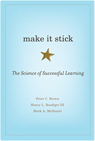 Brown, Peter C., Roediger III, Henry L., McDaniel, Mark A.Down Under Bryson, BillNeither Here nor There: Travels in Europe Bryson, BillNotes from a Big Country Bryson, BillNotes From a Small Island Bryson, BillAfter nearly two decades in Britain, Bill Bryson took the decision to move back to the States for a few years, to let his kids experience life in another country, to give his wife the chance to shop until 10 p.m. seven nights a week, and, most of all, because he had read that 3.7 million Americans believed that they had been abducted by aliens at one time or another, and it was thus clear to him that his people needed him. But before leaving his much-loved home in North Yorkshire, Bryson insisted on taking one last trip around Britain, a sort of valedictory tour of the green and kindly island that had so long been his home. His aim was to take stock of the nation's public face and private parts (as it were), and to analyse what precisely it was he loved so much about a country that had produced Marmite, a military hero whose dying wish was to be kissed by a fellow named Hardy, place names like Farleigh Wallop, Titsey and Shellow Bowells, people who said 'Mustn't grumble', and Gardeners' Question Time.A Walk in the Woods Bryson, Bill, Cook, DavidThe longest continuous footpath in the world, the Appalachian Trail stretches along the East Coast of the United States, from Georgia to Maine, through some of the most arresting and celebrated landscapes in America. At the age of forty-four, in the company of his friend Stephen Katz (last seen in the bestselling Neither Here nor There), Bill Bryson set off to hike through the vast tangled woods which have been frightening sensible people for three hundred years. Ahead lay almost 2,200 miles of remote mountain wilderness filled with bears, moose, bobcats, rattlesnakes, poisonous plants, disease-bearing tics, the occasional chuckling murderer and - perhaps most alarming of all - people whose favourite pastime is discussing the relative merits of the external-frame backpack. Facing savage weather, merciless insects, unreliable maps and a fickle companion whose profoundest wish was to go to a motel and watch The X-Files, Bryson gamely struggled through the wilderness to achieve a lifetime's ambition - not to die outdoors.Buffettology: The Previously Unexplained Techniques That Have Made Warren Buffett The Worlds  -Learn how to approach investing the way Buffett does, based on the authors' firsthand knowledge of the secrets that have made Buffett the world's second wealthiest man -Use Buffett's proven method of investing in stocks that will continue to grow over time The New Buffettology: The Proven Techniques for Investing Successfully in Changing Markets That Have Made Warren Buffett the World's Most Famous Investor  The Tao of Warren Buffett  Warren Buffett and the Art of Stock Arbitrage: Proven Strategies for Arbitrage and Other Special Investment Situations  The Master and Margarita  The Essential Gibran  The Power  The Secret  A Guide to Herbal Remedies John CammarataThe Incredible Present Castor, Harriet1001 Inventions That Changed the World  How World Works EXPORT  Perfect Digestion: The Key to Balanced Living  Synchrodestiny : Harnessing the Infinite Power of Coincidence to Create Miracles  100 Questions From My Child  The Richest Man In Babylon  Shocking Story Of Electricity Anna ClaybourneLiving History  Hillary Rodham Clinton is known to hundreds of millions of people around the world. Yet few beyond her close friends and family have ever heard her account of her extraordinary journey. She writes with candor, humor and passion about her upbringing in suburban, middle-class America in the 1950s and her transformation from Goldwater Girl to student activist to controversial First Lady. Living History is her revealing memoir of life through the White House years. It is also her chronicle of living history with Bill Clinton, a thirty-year adventure in love and politics that survives personal betrayal, relentless partisan investigations and constant public scrutiny. Hillary Rodham Clinton came of age during a time of tumultuous social and political change in America. Like many women of her generation, she grew up with choices and opportunities unknown to her mother or grandmother. She charted her own course through unexplored terrain — responding to the changing times and her own internal compass — and became an emblem for some and a lightning rod for others. Wife, mother, lawyer, advocate and international icon, she has lived through America's great political wars, from Watergate to Whitewater. The only First Lady to play a major role in shaping domestic legislation, Hillary Rodham Clinton traveled tirelessly around the country to champion health care, expand economic and educational opportunity and promote the needs of children and families, and she crisscrossed the globe on behalf of women's rights, human rights and democracy. She redefined the position of First Lady and helped save the presidency from an unconstitutional, politically motivated impeachment. Intimate, powerful and inspiring, Living History captures the essence of one of the most remarkable women of our time and the challenging process by which she came to define herself and find her own voice — as a woman and as a formidable figure in American politics. Like the Flowing River  The Alchemist: A Fable About Following Your Dream  Aleph  Warrior of the Light  Great by Choice: Uncertainty, Chaos, and Luck—Why Some Thrive Despite Them All  The Hunger Games  The Hunger Games: Catching fire Suzanne CollinsMockinjay Suzanne CollinsJim Cramer's Real Money: Sane Investing in an Insane World 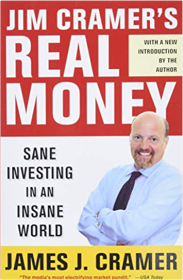 Cramer, James J.The Beginner's Guide to Investing: A Practical Guide to Putting Your Money to Work for You  Chomp of the Meat-Eating Vegetables: A Branches Book Cummings, TroyKeys to the Vault: Lessons From the Pros on Raising Money and Igniting Your Business  Narrative and Numbers: The Value of Stories in Business  I'll Do it My Way  UYR LEVEL-3 TITANIC 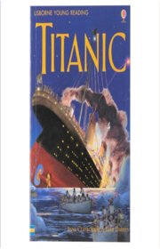 Anna Claybourne & Katie DaynesUYR LEVEL-3 WILLIAM SHAKESPEARE Rosie DickinsA Guide to Music around the World Dunbar-Hall, P.Blasphemy  Range: Why Generalists Triumph in a Specialized World  David Epstein examined the world’s most successful athletes, artists, musicians, inventors, forecasters and scientists. He discovered that in most fields—especially those that are complex and unpredictable—generalists, not specialists, are primed to excel. Generalists often find their path late, and they juggle many interests rather than focusing on one. They’re also more creative, more agile, and able to make connections their more specialized peers can’t see. Provocative, rigorous, and engrossing, Range makes a compelling case for actively cultivating inefficiency. Failing a test is the best way to learn. Frequent quitters end up with the most fulfilling careers. The most impactful inventors cross domains rather than deepening their knowledge in a single area. As experts silo themselves further while computers master more of the skills once reserved for highly focused humans, people who think broadly and embrace diverse experiences and perspectives will increasingly thrive. Common Stocks and Uncommon Profits and Other Writings  "I sought out Phil Fisher after reading his Common Stocks and Uncommon Profits...A thorough understanding of the business, obtained by using Phil's techniques...enables one to make intelligent investment commitments." Paths to Wealth Through Common Stocks Fisher, Philip A.The Next 100 Years: A Forecast for the 21st Century 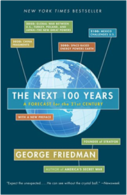 Friedman, GeorgeThe Elephant in the Boardroom: The causes of leadership derailment 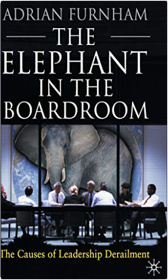 Furnham, A.Opportunities in Emerging Markets: Investing in the Economies of Tomorrow Gaeta, GordianThe Politics of the Common Law: Perspectives, Rights, Processes, Institutions Gearey, Adam, Morrison, Wayne, Jago, RobertThe Vision: Reflections on the Way of the Soul  Eat, Pray, Love: One Woman's Search for Everything Across Italy, India and Indonesia  Blink: The Power of Thinking Without Thinking  What the Dog Saw: Essays 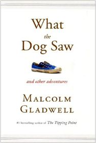 Gladwell, MalcolmJane: Poems of a Performance Poet  The Intelligent Investor: The Classic Text on Value Investing  My Weird School #8: Ms. LaGrange Is Strange! Gutman, DanMy Weird School Daze #4: Coach Hyatt Is a Riot! Gutman, DanHow It Happened  Founding the Fatimid State: The Rise of an Early Islamic Empire  Moth Smoke  The Reluctant Fundamentalist  Uncommon Type  Money  The Undercover Economist Harford, TimTeachings of Rumi Harvey, AndrewThe Secret Law of Attraction as Explained By Napoleon Hill  Think and Grow Rich  A Thousand Splendid Suns Hosseini, KhaledDouble Double  Pakistan: A Personal History  How I Caused the Credit Crunch: An Insider's Story of the Financial Meltdown 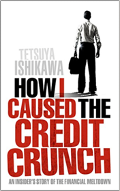 Ishikawa, TetsuyaThe Book of Poisonous Quotes Jarman, ColinWrinklies' Wit & Wisdom: Humorous Quotes from the Elderly Jarski, RosemarieThe Girls' Book of Glamour: a Guide To Being a Goddess 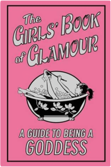 SALLY JEFFRIESuccess Built to Last: Creating a Life That Matters  In Search of Fatima: A Palestinian Story Karmi, GhadaFirst 20 Hours  The Personal MBA: A World-Class Business Education in a Single Volume Kaufman, JoshThe Secret of 'The Secret'  The Art of People  Running Money: Hedge Fund Honchos, Monster Markets and My Hunt for the Big Score  The Science Of Likability  The Undomestic Goddess Kinsella, SophieCashflow Quadrant 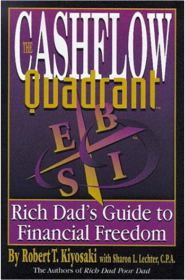 Kiyosaki, Robert T.;Lechter, Sharon L.The Change Book: Fifty models to explain how things happen Krogerus, M.Laughable Loves  Freakonomics: A Rogue Economist Explores the Hidden Side of Everything 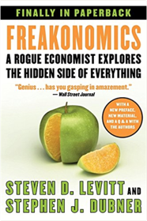 Levitt, Steven D., Dubner, Stephen JThink Like A Freak  Flash Boys  The Big Short: Inside the Doomsday Machine  Boomerang: Adventures of a Financial Disaster Tourist Lewis, MichaelDisney U: How Disney University Develops the World's Most Engaged, Loyal, and Customer-Centric Employees 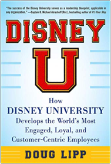 Lipp, DougThe Second Book of General Ignorance. John Lloyd and John Mitchinson 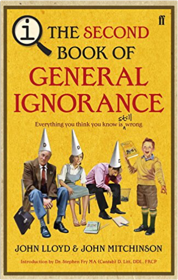 Lloyd, JohnBuffett: The Making of an American Capitalist  One Up On Wall Street: How To Use What You Already Know To Make Money In The Market  Lynch offers easy-to-follow advice for sorting out the long shots from the no-shots by reviewing a company’s financial statements and knowing which numbers really count. He offers guidelines for investing in cyclical, turnaround, and fast-growing companies. As long as you invest for the long term, Lynch says, your portfolio can reward you. This timeless advice has made One Up on Wall Street a #1 bestseller and a classic book of investment know-how. Clueless McGee and the Inflatable Pants: Book 2 Mack, JeffThe Sensational Life And Death Of Qandeel Baloch Sanam MaherA Random Walk Down Wall Street: The Best and Latest Investment Advice Money Can Buy  Everything Is F*Cked: A Book About Hope  The Psychology of Stupidity Jean-Francois MarmionPilgrimage to Warren Buffett's Omaha: A Hedge Fund Manager's Dispatches from Inside the Berkshire Hathaway Annual Meeting  Stink and the Incredible Super-Galactic Jawbreaker McDonald, MeganStink and the World's Worst Super-Stinky Sneakers McDonald, MeganStink: The Incredible Shrinking Kid McDonald, MeganBrain Rules: 12 Principles for Surviving and Thriving at Work, Home, and School 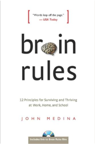 Medina, JohnMind Of The Guru The Revised And Enla Rajiv MehrotraThe Ramayana: A Modern Retelling of the Great Indian Epic  Starting and Running a Sandwich-Coffee Bar  Thinking About It Only Makes It Worse  The Book of General Ignorance 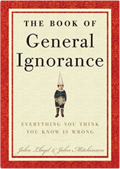 Mitchinson, John, Lloyd, JohnModern Monopolies: What It Takes to Dominate the 21st Century Economy Moazed, Alex, Johnson, Nicholas L.Skin Gods 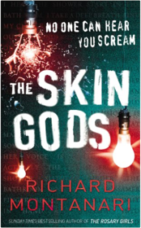 Montanari, RichardThe Sages: Warren Buffett, George Soros, Paul Volcker, and the Maelstrom of Markets  Art of Conversation Morris, JamesSalt Sugar Fat: How the Food Giants Hooked Us  The Rug Merchant 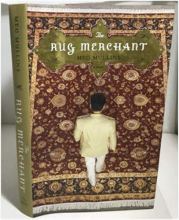 Mullins, MegHow To Attract Money  The Power of Your Subconscious Mind  The Other Side of Truth  Love Sonnets of Ghalib  The Audacity of Hope: Thoughts on Reclaiming the American Dream Obama, BarackDreams from My Father Obama, BarackDreams from My Father: A Story of Race and Inheritance Obama, BarackYour Psychic Powers: A Beginner's Guide  University of Berkshire Hathaway: 30 Years of Lessons Learned from Warren Buffett & Charlie Munger at the Annual Shareholders Meeting  Big Nate Blasts Off  The Adventures of Captain Underpants Dav PilkeyCaptain Underpants and the Attack of the Talking Toilets Pilkey, Dav, Pilkey, DavCaptain Underpants and the Attack of the Talking Toilets 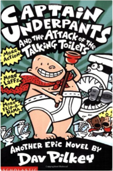 Pilkey, DavCaptain Underpants and the Big, Bad Battle of the Bionic Booger Boy, Part 2 Dav PilkeyCaptain Underpants and the Big, Bad Battle of the Bionic Booger Boy, Part 2: The Revenge of the Ridiculous Robo-Boogers Dav PilkeyCaptain Underpants and the Invasion of the Incredibly Naughty Cafeteria Ladies from Outer Space 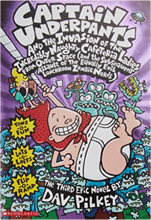 Dav PilkeySuper Diaper Baby 2: The Invasion of the Potty Snatchers Dav PilkeyThe Better Angels of Our Nature  Zen and the Art of Motorcycle Maintenance: An Inquiry into Values Pirsig, Robert M.Osama  Shantaram  Monkey Business: Swinging Through the Wall Street Jungle 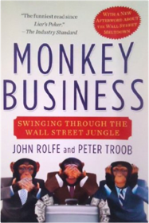 Rolfe, John, Troob, PeterHarry Potter and the Philosopher's Stone Rowling, J. K.Harry Potter is an ordinary boy who lives in a cupboard under the stairs at his Aunt Petunia and Uncle Vernon's house, which he thinks is normal for someone like him who's parents have been killed in a 'car crash'. He is bullied by them and his fat, spoilt cousin Dudley, and lives a very unremarkable life with only the odd hiccup (like his hair growing back overnight!) to cause him much to think about. That is until an owl turns up with a letter addressed to Harry and all hell breaks loose! He is literally rescued by a world where nothing is as it seems and magic lessons are the order of the day. Read and find out how Harry discovers his true heritage at Hogwarts School of Wizardry and Witchcraft, the reason behind his parents mysterious death, who is out to kill him, and how he uncovers the most amazing secret of all time, the fabled Philosopher's Stone! All this and muggles too. Now, what are they?The End of Growth  In an Uncertain World: Tough Choices from Wall Street to Washington  A Thousand Yearnings: A Book of Urdu Poetry & Prose  Becoming Steve Jobs: The Evolution of a Reckless Upstart into a Visionary Leader  The Snowball: Warren Buffett and the Business of Life  Onward: How Starbucks Fought for Its Life without Losing Its Soul Schultz, Howard, Gordon, JoanneForty Rules Of Love  A Simple Celebration: A Vegetarian Cookbook for Body, Mind and Spirit  Horrid Henry & Football Fiend Early 6 Simon, FrancescaHorrid Henry's Big Bad Book : Ten Favourite Stories - And More! Simon, FrancescaHorrid Henry's Homework Simon, FrancescaStart With Why  Can a Guy Get Pregnant?: Scientific Answers to Everyday  Bill and Rich Sones are coauthors of the widely-distributed newspaper column “Strange But True.” Over the past eight years, they’ve gathered together thousands of questions and have diligently tracked down the scientific research that answers them. Here, with dry wit and rock-solid information, the Sones brothers answer everyday and not-so-everyday questions about the body, love, death, and animals, including: If you’re starving, can you eat your clothes? (If you’re wearing the right kind, yes.) Does a “dog year” really equal seven human years? (Nope. But there is a better way to estimate.) What would it be like to die in outer space? (Hint: It’s bad.) Do opposites attract? (Not unless money is involved.) Will chimps watch X-rated movies? (Maybe it’s better not to ask…) Accompanied by illustrations that capture the authors’ unconventional sense of humor, Can a Guy Get Pregnant? will astound and delight both those with a penchant for the bizarre and those who insist on the authority of science. The Crash of 2008 and What it Means: The New Paradigm for Financial Markets  Words of Wisdom  Don't Get Me Started: A Way-Beyond-Grumpy Rant About Modern Life Symons, MitchellDear Mr. Buffett: What an Investor Learns 1,269 Miles from Wall Street  Superforecasting 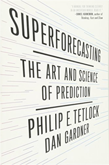 Tetlock, Philip E.; Gardner, DanMisbehaving  The Business Wisdom of Steve Jobs  The Hobbit  Think Big: Make It Happen in Business and Life Trump, Donald J., Zanker, BillTravel Activity Pad  No Full Stops in India  Inspirations: Selections from Classic Literature  Conversations With God : An Uncommon Dialogue Walsch, Neale DonaldMagical Animals 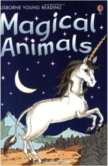 Watson, CarolYoung Reading: Aesop's Fables Watson, CarolThe Elephant and Kangaroo 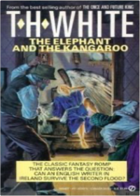 White, T. H.Wisdom on Value Investing 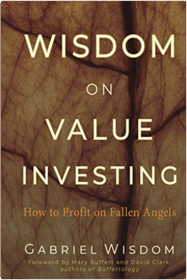 Wisdom, GabrielProtective Options Strategies: Married Puts and Collar Spreads  |


2021 website
Collection Total:
197 Items
197 Items
Last Updated:
Jun 19, 2021
Jun 19, 2021
 Made with Delicious Library
Made with Delicious Library
Springfield, State zipflap congrotus delicious library Jiwani, Faisal